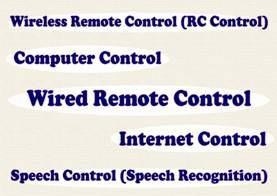

This is the time to come out of bed, feel and perform REAL ENGINEERING, to overcome hierarchical & boring Lectures… You have been watching ROBOTS in,
Those robots can perform every task, solve any difficult problem within seconds and they do amazing things that we can't even imagine. To watch them, a desire comes in our mind that
The answer is "YES" you can make your own robot which will do everything that you want, it will work according to
And perform any task you want to.So, for your interests and to make your dreams come true…
"iMACBOT– Robotics made easy", is a workshop especially conducted for young technical minds and robotics enthusiasts of all disciplines.
iMACBOT is an abbreviation for "Intelligent Machine Robot". You will learn the basics concepts, history, evolution, engineering practices, industrial use, component knowledge, programming integrities, future technology, enhancements, study of logic in design and various machine building concepts, team work, adherence to theory and most importantly will acquire the practical experience while working on the iMAC robo-kit.
You will be introduced to fundamentals of robotics and will learn to apply them in real life. Self-involvement in actual design will result in best output in the way that students will confidently be able to make their own machine.
The iMAC robo kit is specially designed and developed by ARK Techo-systems. Using this kit, students will make a robotic vehicle which can be controlled via four mediums, viz:

With this workshop, we ensure that the participants will master electronics, mechanics and computer programming for robot motion control.
And the added attraction "SPEECH CONTROL". Imagine a robot being incorporated with artificial intelligence and computer control along with its electrical circuit .This is "Technology" and as we have mentioned earlier it's not any stream specific, i.e. all technical departments will have a common base for education.
Don't worry if you do not have any previous knowledge in these fields, this is the right time to enter the robotics world and to do something different from others. Don't be late and get yourself registered for the workshop.
There will be a 3 day workshop (4th to 6th October,2012), sub-divided into following sessions
The sessions are distributed in such a way to get extensive knowledge in each of the working fields.
For more details log on to, www.arktechnosystems.com